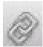
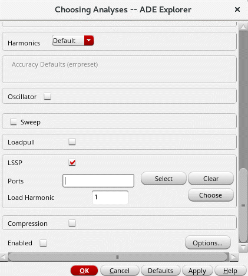

2
Setting Up Explorer Environment
The Virtuoso ADE Explorer lets you can run different simulations for a given design. You choose a simulator and the types of analyses you want to run for the design. You can also specify design variables that you want to use for simulations. When you run simulation, the results are saved in a predefined formats and can be used by other tools, such as the Virtuoso Visualization and Analysis XL for further analysis. If there are signals in the simulation results, they are by default plotted in the Virtuoso Visualization and Analysis XL graph window.
This chapter covers the following topics that describe how you can perform the basic environment settings in Explorer, which includes setting up simulator options, simulation files, environment options, design variables, and so on. It also explains how to configure and customize the default Explorer settings.
ADE Explorer contains a single test and the test name is displayed at the top of the Setup assistant. This assistant displays the setup information for the test, such as simulator, analysis, design variables, parameters, corners, Monte Carlo. By default, the test name includes the design information in the lib:cell:view format. To change the test name:
-
Click the test name to select it and then click again. A cursor appears in the test name field. Specify a new name and press
Enter.
This chapter covers the following topics:
- Prerequisites For Running Explorer
- Specifying Simulator Options
- Setting up High-Performance Simulation Options
- Setting Up Simulation Files
- Setting up Simulator Environment Options
- Setting up Design Variables
- Adding Notes
- Creating and Displaying Netlists
- Variables for Customizing Netlist Generation
- Setting up Stimuli
- Setting up Cosimulation Options
- Setting up MDL Mode
- Saving the Current Setup
- Importing a Saved Setup
- Saving Results in ADE Explorer
- Saving an OCEAN Script
- Configuring and Customizing ADE Explorer Settings
- Using Signals or Triggers
- Reserved Words
Prerequisites For Running Explorer
Before you start performing the Explorer setup and run simulations, you need to perform the following mandatory settings:
- Choosing a Design
- Choosing a Simulator
- Setting the Simulation Temperature
- Choosing an Analysis
- Choosing Model Library Path
Choosing a Design
To choose a design (library, cell, and view) for a given testcase:
- In the Explorer window, choose Setup – Design.
-
Right-click the test name and choose Design.
The Choosing Design -- ADE Explorer form appears.
- In the Library Name, Cell Name, and View Name fields, choose library, cell, and view names.
- In the Open Mode field, choose the mode in which you want to open the selected design —edit or read mode, and click OK.
The Choosing Design form also appears when you create a new maestro view and open Explorer using CIW and Schematic window. For more information about opening Explorer using these methods and choosing a design, see Opening Virtuoso ADE Explorer.
You can also open an existing design and state in ADE Explorer that was created using ADE L. For more details, see Appendix E, “Migrating From ADE L to ADE Explorer”.
Choosing a Simulator
The default simulator used to run simulations in Explorer is Spectre. To use another simulator, do the following:
- Choose Setup – Simulator.
- Double-click in the Simulator section of the Setup assistant.
-
Right-click the test name and choose Simulator.
The Choosing Simulator form appears.
-
In the Simulator drop-down list, select the simulator you want to set. The available options are—
spectre,hspiceD,ultraSim, andams.When you switch from one simulator to another, a new oasis session is created. The new simulator retains the setup files recognized by it and ignores the rest. This behavior is controlled by retainStateSettings environment variable with the default value “yes”. On setting this variable to “no”, the new simulator does not retain the setup files from the previous oasis session.
Setting the Simulation Temperature
To set the temperature for the simulation run:
- Choose Setup – Temperature.
-
Right-click the test name and choose Temperature.
The Setting Temperature form appears.
Alternatively, click the temperature icon (
 ) and specify the temperature value in the text box.
) and specify the temperature value in the text box. - In the Scale field, select the unit you want to use to specify temperature.
- In the Degrees field, specify the temperature value.
- Click OK.
-
Specify a design variable named
temperaturein the Setup assistant and add sweep values in thestart:step:endformat.
You can also sweep the temperature by creating a design variable, for example, var1, and then in the Degrees field, type VAR("var1"). The value of variable var1 can be swept to perform a temperature sweep. While specifying the temperature value through the VAR function, if you have a temperature value specified in the Corners Setup form, an error message is displayed asking you to confirm whether the values in the Corners Setup form should be removed or retained.
Choosing an Analysis
After you specify a simulator, you need to choose the analysis type on which you want to run simulation. These analysis type vary according to the simulator you select.
- Choose Analyses – Choose.
-
Click the
Click to add analysisin the Setup assistant. - Click the Choose Analysis icon on the Run toolbar.
-
Right-click the test name and choose Add Analysis.
The Choosing Analyses -- ADE Explorer form is displayed.

In this form, select the analysis you want to set and specify its attributes. For detailed information about the analyses in Spectre, see
Choosing Model Library Path
To set up models libraries for simulator interfaces, do one of the following:
- In the ADE Explorer window, choose Setup – Model Libraries.
-
Right-click the test name and choose Model Libraries.
Note the following when you are entering the path and filename:- You can use absolute and relative paths.
- You can use environment variables to specify the path.
- You can use design variables to specify the model library name.
The Model Library Setup form appears.

-
In the Global Model Files column, type the path and filename of the model file you want to use.
The model files contain all model definitions referred to by your design and not defined within the Virtuoso library. Unless you specify a full path, the simulator assumes that you are using the project directory.
Alternatively, you can click the browse button to select a valid model file.Alternatively, you can click the browse button to select the model library files to be added. - (Optional) In the Section column, select a section from the drop-down list.
- If the check box next to a model library is selected, the model library is enabled for the design. To disable the model library, clear the check box next to the library.
You can also add, enable or disable model library files using the asiSetEnvOptionVal SKILL functions as shown below:
asiSetEnvOptionVal(asiGetTool(’spectre) "modelFiles"
list(
list("/usr1/models/model1.scs")
list("/usr1/models/model2.scs")
list("#" "/usr1/models/model3.scs")
))
The#symbol is used to disable themodel3.scsfile. If the # symbol is not used, the model library is enabled for the design.
The order in which the libraries are listed in the form determines their search order. Libraries are searched starting at the top of the list. If a model is included in two or more libraries, you can change the search order to determine which library ADE Explorer searches first. ADE Explorer uses the first model found in the search order.
-
To move a library one level up, select the library and click the
 button.
button. -
To move a library one level down, select the library and click the
 button.
button. -
To edit a model library file, select the file and click the
 button to open the file in a text editor
button to open the file in a text editor - To delete a model library file, select the file and click the button.
-
To move a library one level up, select the library and click the
The model file for a direct interface simulation of the schematic view of the lowpass cell of the aExamples library can be found in your_install_dir/tools/dfII/samples/artist/models/spectre/definitions.scs
simulator lang=spectre
model npn bjt type=npn is=3.26E-16 va=60 bf=100 \
br=6 nc=2 ikr=100m rc=1 vje=0.7 \
cjc=1e-12 fc=0.5 cje=0.7e-12 \
tr=200e-12 tf=25e-12 itf=0.03 vtf=7 xtf=2
model pnp bjt type=pnp is=3.28e-16 va=30 bf=35 \
br=6 nc=2 ikr=100m rc=1 \
cjc=1e-12 fc=0.5 cje=0.7e-12 \
tr=200e-12 tf=65e-12 itf=0.03 vtf=7 xtf=2
The models npn and pnp are referenced within the opamp schematic cell-view of the aExamples library. The device Q25 (connected to the pin inp) references the model npn with the parameter model (Model Name).
Specifying Simulator Options
This section describes the various simulator that are supported in Explorer. The default simulator is Spectre.
- Spectre
- Spectre X
- Spectre FX
- Virtuoso Accelerated Parallel Simulator (APS)
- Virtuoso UltraSim Simulator Interface
- Virtuoso AMS Simulator Interface
- Virtuoso HSPICE Simulator Interface
Spectre
The Explorer environment provides the spectre interfaces to the Spectre® analog simulator.
You need to use the MMSIM version of Spectre, which is available on the MMSIM CD and not in the DFII hierarchy. If you set up your path to point to a previous (non-MMSIM) version of the Spectre software, the simulation will not run and you get the following message:
"The ’spectre’ executable that you are using is an older version.Use MMSIM60 or later version of Spectre with this release. To check the spectre version, run ’spectre -W’."
The Spectre simulator is integrated into the analog circuit design environment with the Open Analog Simulation Integration Socket (OASIS).
To run real time tuning simulations using Spectre, use MMSIM14.1ISR3 or beyond, otherwise the RTT simulations are run in the batch mode. For more information, see Chapter 10, “Real-Time Tuning in Simulations”.
Setting Spectre Options
Perform the following steps to set the simulator-specific options and variables for Spectre:
-
Choose Simulation – Options – Analog. This command helps you set simulator options and variables that apply to all analyses.

You can turn on the AHDL linter feature when the Fast APS mode is enabled. For information about the AHDL Linter feature, refer to the chapter
Simulator Options Form
The Simulator Options form lets you specify simulator-specific options and variables that apply to all analyses.
The form contains the following tabs.
Main
The following table describes the fields available on the Timestep tab of the Simulator Options form.
Algorithm
The following table describes the fields available on the Algorithm tab of the Simulator Options form.
Component
The following table describes the fields available on the Component tab of the Simulator Options form.
Check
The following table describes the fields available on the Check tab of the Simulator Options form.
Annotation
The following table describes the fields available on the Annotation tab of the Simulator Options form.
Miscellaneous
The following table describes the fields available on the Miscellaneous tab of the Simulator Options form.
Related Topics
Environment Variables for Spectre Simulator Options Form.
Specifying the PSF Version in Simulator Options
To specify the PSF version you want to use for writing the simulation results, do the following
-
In the Simulator Options form, on the tab, in the Additional Arguments field, specify the PSF version in the following format:
psfversion="1.0.0"
The command above sets the PSF version 1.0.
Specifying Performance and Post-Layout Optimization Options for the Spectre Simulator
With the Spectre simulator, you can run simulation using the baseline Spectre version. You can also enable post-layout optimization to perform parasitic reduction with more tunable and higher compression levels. This option also enables other algorithms that optimize the performance of the DC solution phase and matrix solver specifically for large postlayout circuits, enabling transient and DC analyses with these circuits to be performed faster.
For more information about the baseline Spectre version and post-layout optimization, see the Spectre Circuit Simulator Reference
To specify performance and post-layout optimization options for the Spectre simulator, do the following:
-
Choose Setup – High-Performance Simulation.
The High-Performance Simulation Options form appears.The High-Performance Simulation menu option is disabled when a Spectre simulation is running in the interactive mode. -
Select one of the following simulation performance modes:
- Spectre—Use the baseline Spectre version for simulation.
-
APS—Use the Accelerated Parallel Simulator (APS) for simulation. The additional fields required for APS mode appear on the form:
-
Spectre X— Use the Spectre X simulator mode for simulation. For more information, see Spectre X.
- XPS MS—Use the Extensive Partitioning Simulator Mixed-Signal (XPS MS) mode for simulation. For more information, see MS Options.
You can switch between Spectre and APS default tolerance options using the Reset cdsenv options check box. When the Simulation Performance Mode is set to Spectre and the Reset cdsenv options check box is selected, ADE resets the transient options to Spectre default settings. If you want to switch to APS default settings, select APS from the Simulation Performance Mode and select the Reset cdsenv options check box.The default transient options will change from Spectre to APS only if you change the Simulation Performance Mode from spectre to APS and select the Reset cdsenv options check box and vice versa. If you change the Simulation Performance Mode and do not select the check box, the default options will not change. -
Specify the accuracy level for transient analysis runs by selecting one of the following options in the Error Preset field:
- Select Do not override to use the accuracy level specified for transient analyses runs in the Choosing Analysis form. For more information about setting up a transient analysis, see Transient Analysis.
- Select Liberal, Moderate, or Conservative to override the accuracy level specified for transient analyses runs in the Choosing Analyses form.
If errpreset is not set for transient analyses in the Choosing Analyses form and is set to Liberal, Moderate, or Conservative in the High-Performance Simulation Options form, the settings are netlisted and written into the runSimulation file.
For more information about the Liberal, Moderate and Conservative accuracy levels, see the documentation for theerrpresetparameter in the Spectre Circuit Simulator Reference. -
Select the Enable FMAX Control check box to specify the maximum frequency of the internal net of the circuit or the max operating frequency of the circuit. This field appears only when the XPS MS simulation performance mode is selected and the Enable Post-Layout Optimization check box is selected.
-
Circuit internal net maximum frequency—Specify an integer value in this field. It adds the
+rcnet_fmax=<value>option to the+postlayoutcommand line option. The maximum frequency typically ranges from 50G to 250G.If the simulation performance mode is set to APS, this field appears when the post-layout preset mode is set to Default, High Precision Analog, or Ultra Precision Analog. And if the performance mode is set to XPS MS, this field appears when the Enable FMAX Control check box is selected. 
-
Circuit maximum operating frequency—Specify an integer value in this field. It adds the
rcr_fmax=<value>global
This field appears only when the performance mode is set to APS and the post-layout preset mode is set to Legacy RCR.
-
Circuit internal net maximum frequency—Specify an integer value in this field. It adds the
-
Specify the instances to be preserved from being shorted by selecting the required Instance Preservation option. Select this check box only if you want to save all operating point data because it might slow down the simulation.
-
(Optional) Click the Detailed Options button. The Post-Layout Detailed Options form appears:
In the form, specify the following:
-
Resistor Shorting Threshold— Specify a threshold value (in
ohms) to short resistors whose resistance is less than the specified value. -
Decoupling Capacitor Threshold—Specify a threshold value (in
farads) to decouple capacitors whose capacitance is less than the specified value.
The Detailed Options button is enabled only when APS is selected as the performance mode and the Enable Post-Layout Optimization check box is selected. -
Resistor Shorting Threshold— Specify a threshold value (in
-
Click OK.
The ADE Explorer window displays the settings you made in the High-Performance Simulation Options form. For example, if you selected the simulation performance mode as and the accuracy level as Liberal, the status bar in the window displays the simulator name as:
spectre liberal
For more information on how to get better performance from APS mode, see the Getting More Performance From Spectre APS Simulation section in Spectre Classic Simulator, Spectre APS, Spectre X, and Spectre XPS User Guide.
Spectre X
When you select the Simulation performance mode as Spectre X, the following fields appear in the High-Performance Simulation Options form.
-
Preset — Spectre X provides five high-level preset options, that allow you to trade off accuracy and performance. These high-level options not only control solver settings, but also enable parasitic optimization after automatically detecting postlayout designs.
Option Name When to Use - Multi-Threading: The Spectre X supports multi-threading on multi-core computer platforms. You can enable the following multi-threading modes:
-
Multi-Processing: Spectre X distributed simulation allows more computer cores across multiple computer hosts to further speed up DC and transient run time of large to very large postlayout circuits. You can select the following methods for job distribution:
Farm, SSH,andRSH. -
Advanced Options:
-
Preset Override: By default Spectre X ignores the user-specified simulation options that trade off performance and accuracy. However, you can select this option to tell Spectre X to honor the user-specified simulation options.The following list shows the options that are overriden by Spectre X
-
Option parameters:
iabstol,method,preserve_inst,reltol, andvabstol -
Transient parameters:
lteratioandrelref
The following table shows the corresponding Spectre options added for the values specified in the Preset Override field. -
Option parameters:
-
Preset Override: By default Spectre X ignores the user-specified simulation options that trade off performance and accuracy. However, you can select this option to tell Spectre X to honor the user-specified simulation options.The following list shows the options that are overriden by Spectre X
- Parasitics Optimization: Enables parasitic optimization with the selected preset option.
-
GPU: Enables GPU mode of Spectre X.
- Auto: Chooses the GPU devices to be used automatically if the system has multiple GPUs.
-
Farm: Lets the farm management tool assign the machine and GPU to be used for the simulation.
To manually specify the number of GPUs for a simulation, specify a value in the # Devices field. - Manual: Lets you specify the GPUs or devices to be used to run the simulation. This enables the # Devices IDs field.
- # Devices: Specifies the number of GPUs or devices to be used to run the simulation.
- # Device IDs: Specifies the IDs for the GPUs or devices to be used to run the simulation.
For information about Spectre X, read the Spectre Classic Simulator, Spectre APS, Spectre X, Spectre XPS, Spectre FMC Analysis, and Legato Reliability Solution User Guide and the Spectre Circuit Simulator Reference.
Using GPU with Spectre X
Spectre X lets you use graphics processing units (GPUs) in addition to CPUs. If there are GPUs available in the setup and you have large designs that have long-running transient analyses, post-layout or advanced node simulations, you can use GPU mode of Spectre X to speed up simulations.
To enable GPU for Spectre X, perform the following steps:
-
Set the SHELL environment variable
CDS_ADE_SPECTREX_GPU 1. - In the High-Performance Simulation Options form, select Spectre X as the simulation performance mode.
- Select the Advanced Options check box.
-
Select the GPU check box.
Select a job distribution method and specify the GPUs to be used for the simulation, along with their IDs.
MS Options
You can set up mixed-signal options only when:
- The selected simulation performance mode is APS.
-
The environment variable
maestro.guishowMSOptionsInSpectreXTabis set tot
On selecting Enable MS, the following fields appear in the High-Performance Simulation Options form.
-
Digital Speed—Specifies the simulation speed and accuracy of digital portions. The default value is
2. - Digital Subcircuits—Specifies the digital subcircuits for simulation. Click Select to choose the digital subcircuits on the schematic.
- Digital Instances—Specifies the digital instances for simulation. Click Select to choose the digital instances on the schematic.
- Analog Subcircuits—Specifies the analog subcircuits for simulation. Click Select to choose the analog subcircuits on the schematic.
- Analog Instances—Specifies the analog instances for simulation. Click Select to choose the analog instances on the schematic.
-
Virtual Ground Nodes—Specifies the virtual ground nodes. Click Select to choose the virtual ground nodes on the schematic. The value of ground voltage is assumed to be
0V. -
Virtual Power Node—Specifies the virtual power supply nodes. Click Select to choose the virtual power supply node on the schematic.
-
Value—Specifies the voltage value of the virtual power supply node. After specifying the virtual power supply node and its value, click the Add button to add the node to the Virtual Power Nodes table as shown below:If you do not specify a voltage value for the selected virtual power supply node, the node is not added to the table when you click the Add button.Select a row and click the Delete button to delete the selected row. Or click the Clear button to clear the entire table.
-
Value—Specifies the voltage value of the virtual power supply node. After specifying the virtual power supply node and its value, click the Add button to add the node to the Virtual Power Nodes table as shown below:
- DC OP Solver—Specifies how to calculate the DC operating point before performing the transient simulation.
-
Vdd override—Specifies the maximum voltage for the device models in the digital simulation engine. The default value is
3.3V.
Related Topics
Spectre FX
On selecting the simulation performance mode as Spectre FX, the options specific to this mode are displayed.
In the General group box, specify the following options.
-
Preset — Specifies the high-level preset options that allow you to trade off accuracy and performance. The available options are ax, mx, lx, and vx.
By default, the lx preset mode is selected. -
Multi-Threading— Specifies the multithreading options for Spectre FX. Multithreading is supported on multi-core computer platforms.
You can select one of the following options. -
Advanced Options— Displays the Advanced group box.
In this group box, specify the following options.-
Global Base Mode Preset—Specifies the base mode preset mode for the entire circuit. The available options are
baseax,basemx,baselx, andbasevx. -
Local Scoped Options—Specifies the options that Spectre FX lets you set locally.
The following options can be specified using a local scope:
The scope can be a subcircuit definition (subckt=) or instances (inst=). - Additional Netlist Options— Lets you specify any additional netlist options that can be used for Spectre FX.
- Global Options—Lets you specify the options that Spectre FX supports. You can select an option from the drop-down list or specify other options manually.
- Additional Command Line Options— Lets you specify any additional command-line options that can be used for Spectre FX.
-
Global Base Mode Preset—Specifies the base mode preset mode for the entire circuit. The available options are
For more information, refer to the Spectre FX Circuit Simulator User Guide.
Transient Analysis with Spectre FX
When the simulation performance mode is set to Spectre FX, the Choosing Analyses form for transient analysis is updated as follows.
- The fields, Stop Time, Dynamic Parameter, and Enabled are available.
- On selecting the Dynamic Parameter check box, the options displayed in the Param list get updated to User-defined, speed, maxstep, and temp.
The following transient parameters are supported with Spectre FX.
-
Simulation interval parameters:
startandoutputstart. -
Initial condition parameters:
skipdcandreadic -
State file parameters:
write -
Save restart parameters:
saveclock,saveperiod,savetime,savefile, andrecover -
Strobing parameters:
skipstart,skipstop,strobeperiod,strobeoutput, andstrobedelay -
Additional parameters:
additionalParams
Analyses Supported by Spectre FX
Spectre FX supports the following analyses:
- It lets you run transient, DC, and AC analyses.
- It supports the Single Run, Sweeps and Corners and Monte Carlo Sampling run modes.
Virtuoso Accelerated Parallel Simulator (APS)
spectre as the simulator and choose Setup – High-Performance Simulation.Explorer provides an interface to the Virtuoso® Accelerated Parallel Simulator (APS). APS is a next generation SPICE simulator that provides high performance, high capacity circuit simulation with full Spectre accuracy. APS achieves maximum simulation performance by enabling multi-threading on multi-core and multi-CPU shared memory systems. This allows you to quickly simulate large pre- and post-layout designs.
APS combines an advanced simulation engine with existing Spectre and Spectre technologies. It is primarily targeted at speeding up DC and Transient analyses. The APS use model is identical to Spectre, with same netlist syntax, device model, analyses, features, and output format support.
For more information about APS, see the Virtuoso Accelerated Parallel Simulator User Guide.
Virtuoso UltraSim Simulator Interface
Virtuoso ADE Explorer provides the interface to run Virtuoso® UltraSim simulator.
For more information about how to use UltraSim simulator in Explorer, see Chapter 19, “Working with UltraSim Simulator”.
Virtuoso AMS Simulator Interface
Virtuoso ADE Explorer provides a seamless integration of the Spectre AMS Designer and Xcelium Mixed-Signal simulator. The integration of the Spectre AMS Designer simulator and ADE Explorer creates a design environment with the look and feel expected by the analog and mixed-signal designers who already use ADE. When using this integration, you can access designs using the same tools you currently use for pure analog and mixed signal designs.
For more information about how to use AMS simulator in Explorer, see Chapter 15, “Working with AMS Simulator”.
Virtuoso HSPICE Simulator Interface
Virtuoso ADE Explorer provides the interface to run Virtuoso HSPICE simulator.
For more information about how to use HSPICE simulator in Explorer, Chapter 16, “Working with HSPICE Simulator”.
Setting up High-Performance Simulation Options
To specify the high-performance simulation options for Spectre and AMS simulators, do the following:
-
Choose Setup – High-Performance Simulation.The High-Performance Simulation menu option is disabled when a simulation is running in the interactive mode.The High-Performance Simulation Options form appears.
-
Select one of the following simulation performance modes:
- Spectre—Use the baseline Spectre version for simulation.
-
APS—Use the Accelerated Parallel Simulator (APS) for simulation. It preserves all of the numerical simulation algorithms like numerical tolerance control, time step control, Newton iteration control, analytical device model, and so on and it is expected to produce a near identical simulation numerical noise floor as baseline Spectre. This tight accuracy correlation between baseline Spectre and Spectre APS does restrict some additional simulation performance.
To further speed up simulation, you can use the++apssimulation mode.
You can also set up the Mixed-Signal (MS Options) options to get a high-performance transistor-level multi-rate simulation solution by combining a highly accurate SPICE engine (Spectre APS) together with a fast digital simulation engine (Spectre XPS). The identification between the analog and digital portions of the circuit is done automatically, with the added flexibility for advanced users to optimize it. It further speeds up both pre-layout and postlayout simulations. For more information, see MS Options.
You can use the environment variable, uniMode to change the default setting for Simulation Performance Mode.
You can switch between Spectre and APS default tolerance options using the Reset cdsenv options check box. When the Simulation Performance Mode is set to Spectre and the Reset cdsenv options check box is selected, ADE resets the transient options to Spectre default settings. If you want to switch to APS default settings, select APS from the Simulation Performance Mode and select the Reset cdsenv options check box.The default transient options will change from Spectre to APS only if you change the Simulation Performance Mode from spectre to APS and select the Reset cdsenv options check box and vice versa. If you change the Simulation Performance Mode and do not select the check box, the default options will not change.Reset cdsenv options check box is available only if the .cdsenv file exists inThe additional fields required for APS mode appear on the form:<cds_inst_dir>/tools/dfII/etc/tools/aps/location. -
Spectre X— Use the Spectre X simulator mode for simulation. It provides five high-level
+presetoptions likecx,ax,mx,lxandvxthat allow you to trade off accuracy and performance. These high-level options not only control solver settings, but also enable parasitic optimization after automatically detecting postlayout designs. Thecxmode provides the highest accuracy, while thevxmode provides the highest performance. For more information, see Spectre X.
Note the following: -
Spectre FX— Use the Spectre® FX simulator mode for simulation. Spectre FX is the next-generation FastSPICE simulator that addresses simulation challenges like,
- An increase in demand for performance, accuracy, and capacity from transistor-level simulators.
- The advancement of process nodes.
- The adoption of new design practices.
- The need for full-chip simulation.
- The stronger effect of parasitic elements that greatly increase the size and complexity of the designs to be simulated.
For more information, see Spectre FX.
-
Specify the accuracy level for transient analysis runs by selecting one of the following options in the Error Preset field:
- Select Do not override to use the accuracy level specified for transient analyses runs in the Choosing Analysis form. For more information about setting up a transient analysis, see Transient Analysis.
- Select Liberal, Moderate, or Conservative to override the accuracy level specified for transient analyses runs in the Choosing Analyses form.
If errpreset is not set for transient analyses in the Choosing Analyses form and is set to Liberal, Moderate, or Conservative in the High-Performance Simulation Options form, the settings are netlisted and written into the runSimulation file.
For more information about the Liberal, Moderate and Conservative accuracy levels, see the documentation for theerrpresetparameter in the Spectre Circuit Simulator Reference. -
Select the Use ++aps option to enable the Fast APS mode. This mode uses a different time-step control algorithm compared to spectre, which results in improved performance while satisfying error tolerances and constraints.
-
Select one of the following options in the Multi-Threading field:
Select To Use the maximum number of available threads to run the simulation.
The number of threads used—one thread for every CPU core—is automatically derived from the hardware architecture in use, but is limited to a maximum of:
When a manual multi-threading simulation is run, in the #Threads field, you can add either:
- The number of threads. You can specify up to:
-
The computer farm management tool (
sge,lsf,loadlevelerorfarm) to be used to run simulation. On doing so, a+mtoption will be added to therunSimulationfile in the netlist directory.
For example, if the specified computer farm management tool issge, the option,+mt=sgewill be added to therunSimulationfile.
In the manual multi-threading mode, the environment variable spectreMTNumberUsed specifies the+mtoption for Spectre APS.
Note the following:- The multithreading options specified in this form override the multithreading options specified in the Simulator Options form. For more information about the Simulator Options form, see Specifying Simulator Options.
- If Spectre is set as the analog solver for the Spectre AMS Designer simulator, multithreading is supported only if you are using the Cadence IUS 8.2 or a later release.
-
Select one of the following options in Savefilter:
Select To Enables filtering the internal RC nodes for probe or save statement. It is the default value of Savefilter.
-
In the Processor affinity field, specify the processors using which simulation sessions should be run.This field is available only for the lnx86 platform, If you are using an ibmrs or a sun4v machine, this option will not be visible.
When running multiple multi-threading simulation sessions on a single computer, it is recommended that you fix the simulation session to particular processors. Otherwise multiple simulation sessions can race against each other to get the available processors, resulting in a less than optimum simulation performance. For example, to run two 4- thread simulation sessions on an 8-processor computer, specify 0-3 in the Processor affinity field for the first 4-thread simulation session using processors 0 to 3, and 4-7 in the Processor affinity field for the second 4-thread simulation session using processors 4 to 7. -
To optimize post-layout designs and maximize post-layout simulation performance select the Enable Post-Layout Optimization check box.
-
Select one of the following options in the Post-Layout Preset Mode field:
-
Select the Enable FMAX Control check box to specify the maximum frequency of the internal net of the circuit or the max operating frequency of the circuit. This field appears only when the XPS MS simulation performance mode is selected and the Enable Post-Layout Optimization check box is selected.
-
Circuit internal net maximum frequency—Specify an integer value in this field. It adds the
+rcnet_fmax=<value>option to the+postlayoutcommand line option. The maximum frequency typically ranges from 50G to 250G.If the simulation performance mode is set to APS, this field appears when the post-layout preset mode is set to Default, High Precision Analog, or Ultra Precision Analog. And if the performance mode is set to XPS MS, this field appears when the Enable FMAX Control check box is selected. 
-
Circuit maximum operating frequency—Specify an integer value in this field. It adds the
rcr_fmax=<value>global
This field appears only when the performance mode is set to APS and the post-layout preset mode is set to Legacy RCR.
-
Circuit internal net maximum frequency—Specify an integer value in this field. It adds the
-
Specify the instances that you do not want to be shorted by selecting the required Instance Preservation option:
-
(Optional) Click the Detailed Options button. The Post-Layout Detailed Options form appears:
In the form, specify the following: -
(Optional) Click the Detailed Options button. The Post-Layout Detailed Options form appears:
In the form, specify the following:
-
Resistor Shorting Threshold— Specify a threshold value (in
ohms) to short resistors whose resistance is less than the specified value. -
Decoupling Capacitor Threshold—Specify a threshold value (in
farads) to decouple capacitors whose capacitance is less than the specified value.
The Detailed Options button is enabled only when APS is selected as the performance mode and the Enable Post-Layout Optimization check box is selected. -
Resistor Shorting Threshold— Specify a threshold value (in
-
Click OK.
The ADE Explorer window displays the settings you made in the High-Performance Simulation Options form. For example, if you selected the simulation performance mode as and the accuracy level as Liberal, the status bar in the window displays the simulator name as:
spectre liberal
For more information on how to get better performance from APS mode, see the Getting More Performance From Spectre APS Simulation section in Spectre Classic Simulator, Spectre APS, Spectre X, and Spectre XPS User Guide.
Spectre X
When you select the Simulation performance mode as Spectre X, the following fields appear in the High-Performance Simulation Options form.
-
Preset — Spectre X provides five high-level preset options, that allow you to trade off accuracy and performance. These high-level options not only control solver settings, but also enable parasitic optimization after automatically detecting postlayout designs.
Option Name When to Use
Related environment variable: spectreXPreset -
Multi-Threading — The Spectre X supports multi-threading on multi-core computer platforms. You can enable the following multi-threading modes:
- Auto – To automatically allocate the threads for simulation
- Disable – To disable multi-threading
- Manual – To manually allocate threads
Related environment variable: spectreXMtOption -
Multi-Processing — Spectre X distributed simulation allows more computer cores across multiple computer hosts to further speed up DC and transient run time of large to very large postlayout circuits. You can select the following methods for job distribution:
Farm, SSH,andRSH.
Related environment variable: spectreXMpOption -
Advanced Options —
- Preset Override – By default Spectre X ignores the user-specified simulation options that trade off performance and accuracy. However, you can select this option to tell Spectre X to honor the user-specified simulation options.
- Parasitics Optimization – Select the check-box to enable Parasitics optimization with the selected preset option.
Related environment variable: spectreXAdvanced - MS Options — Set up the mixed-signal options to get a high-performance transistor-level multi-rate simulation solution using Spectre X engine. The identification between the analog and digital portions of the circuit is done automatically, with the added flexibility for advanced users to optimize it. It further speeds up both pre and post-layout simulations. For more information, see MS Options.
For information, see the
MS Options
You can only set up the Mixed-Signal options when the simulation performance mode is set to APS or Spectre X. On selecting the Enable MS check box, the following fields appear in the High-Performance Simulation Options form.
This form includes an additional section, MS Options, that includes the various MS options.
The options that appear in the MS Options section of the High-Performance Simulation Options form are described below:
-
Digital Speed—Specifies the simulation speed and accuracy of digital portions. The default value is
2. - Digital Subcircuits—Specifies the digital subcircuits for simulation. Click Select to choose the digital subcircuits on the schematic.
- Digital Instances—Specifies the digital instances for simulation. Click Select to choose the digital instances on the schematic.
- Analog Subcircuits—Specifies the analog subcircuits for simulation. Click Select to choose the analog subcircuits on the schematic.
- Analog Instances—Specifies the analog instances for simulation. Click Select to choose the analog instances on the schematic.
-
Virtual Ground Nodes—Specifies the virtual ground nodes. Click Select to choose the virtual ground nodes on the schematic. The value of ground voltage is assumed to be
0V. -
Virtual Power Node—Specifies the virtual power supply nodes. Click Select to choose the virtual power supply node on the schematic.
-
Value—Specifies the voltage value of the virtual power supply node. After specifying the virtual power supply node and its value, click the Add button to add the node to the Virtual Power Nodes table as shown below:If you do not specify a voltage value for the selected virtual power supply node, the node is not added to the table when you click the Add button.Select a row and click the Delete button to delete the selected row. Or click the Clear button to clear the entire table.
-
Value—Specifies the voltage value of the virtual power supply node. After specifying the virtual power supply node and its value, click the Add button to add the node to the Virtual Power Nodes table as shown below:
- DC OP Solver—Specifies how to calculate the DC operating point before performing the transient simulation.
-
Vdd override—Specifies the maximum voltage for the device models in the digital simulation engine. The default value is
3.3V.
For information about Spectre, read the Spectre Circuit Simulator User Guide and the Spectre Circuit Simulator Reference.
Virtuoso Accelerated Parallel Simulator (APS)
spectre as the simulator and choose Setup – High-Performance Simulation.Explorer provides an interface to the Virtuoso® Accelerated Parallel Simulator (APS). APS is a next generation SPICE simulator that provides high performance, high capacity circuit simulation with full Spectre accuracy. APS achieves maximum simulation performance by enabling multi-threading on multi-core and multi-CPU shared memory systems. This allows you to quickly simulate large pre- and post-layout designs.
APS combines an advanced simulation engine with existing Spectre and Spectre technologies. It is primarily targeted at speeding up DC and Transient analyses. The APS use model is identical to Spectre, with same netlist syntax, device model, analyses, features, and output format support.
For more information about APS, see the Virtuoso Accelerated Parallel Simulator User Guide.
Setting Up Simulation Files
Before you run a simulation, you must set up the simulation files you want to use.
-
Choose Setup – Simulation Files.
The Simulation Files Setup form appears.
You can set up include paths, definition files and stimulus files using the Paths/Files tab and setup digital vector files using the Vector Files tab.
Refer to the following sections for more information about using the Simulation Files Setup form:
- Specifying Simulation Files
- Specifying Simulation Files Using Variables
- Using Shell Environment Variables to Specify the Paths
- Enabling and Disabling Simulation Files
- Editing Simulation Files
Specifying Simulation Files
Depending on your design and setup requirements, you need to use various types of files for simulations run in ADE Explorer.
The table below describes each file type and its purpose.
| File Type | Description |
|
Definition files contain function and parameter definitions that are not displayed in the Design Variables list in the Data View assistant. See the following sample file that contains function and parameter definitions for the Spectre circuit simulator.
The parameters in this file are referenced by included models and are not referenced from any part of the design in the Cadence library. |
|
|
Stimulus files can contain input and power supply stimuli, initializing nodes, and estimated parasitics in the netlist. You can look at the following example file that contains Spectre circuit simulator stimuli definitions for the opamp sample design in the aExample library.
In a stimulus file, you can type node names and component names using Open Simulation System (OSS) syntax |
|
|
DSPF files contain the post-layout data, including fingered devices and net parasitics, of the design. For EMIR analysis, Spectre APS/XPS requires a complete testbench that contains the DSPF files (with the parasitic and instance sections describing the circuit to be analyzed), stimuli, and device models.
On specifying a DSPF parasitic file, a few additional options are displayed. For more information on these options, see |
|
|
SPEF post-layout netlists are supported by the AMS, Spectre APS/XPS EMIR flow. An SPEF netlist contains a combination of a schematic netlist with the active devices and an SPEF netlist that includes the parasitic element information. |
|
|
PSpice files contain netlists that include PCB components modeled using the PSpice format. When you use PSpice files, the top-level netlist and control statement need to be defined in Spectre or SPICE format. A subcircuit defined in PSpice netlist format is instantiated in the Spectre netlist. |
|
|
Vector (VEC) files include a table of times and values at those times. A vector file can include more than one vector definition. |
|
|
VCD (Verilog® Value Change Dump) files contain information about value changes for selected variables in the circuit design. |
|
|
EVCD (Extended Verilog® Value Change Dump) files contain variable changes in all states and provide strength information and port direction. |
You can use the Simulation Files Setup form to specify the paths to these files.
To specify simulation files for a test, do the following:
-
In the Data View assistant pane, right-click the test or analysis name, and choose Simulation Files.
The Simulation Files Setup form appears. This form contains two tabs: - If the files to be used are located at multiple locations and you want ADE Explorer to look for files in all those paths, specify those paths in the Include Paths tree.
- To specify the path to a file of a specific type, click where it says <Click here to add a path> or <Click here to add a file> in the tree of that file type.
-
Type the path and name of your file, or click the browse button to select one or more files or paths using the Choose Files/Paths form.The simulator resolves a relative path by first looking in theAfter you have specified a file or path, a new row is added to the tree. If you have multiple files, you can use the additional rows to specify the paths to those files.
netlistdirectory (relative to where you run the simulation). If the path starts with the.character, the simulator resolves this by looking in thenetlistdirectory first, then in each of the directories specified in Include Paths in the order you type them. The.character does not mean the current directory. -
(Optional) Click Apply to the Selected Tests in the Setup () on the Paths/Files tab of this form to update simulation files for all the applicable tests in a setup.
The Apply Simulation Files Setup to Tests form appears. - Click OK to close the Simulation Files Setup form.
Important Points to Note
- For AMS simulator, a PSpice_include Statements included in Model Files check box appears in the PSpice Options section of the Simulation Files Setup form
-
For some of the file types, a few additional fields are displayed on the form.
For example, when you select a vector file, the Vector File Options section is displayed on the Vector Files tab with the hlCheck field. To enable the check for H and L states for input signals, choose 1.
Selecting a VCD or EVCD file displays an additional field in which you can specify a VCD or EVCD file is. - By default, the simulation files you add are enabled for simulation. You can use the check box next to a file name to enable or disable a simulation file for simulation.
- To edit a simulation file, select the file and click Edit/view selected files. The selected simulation file is opened in a text editor where you can make changes to the file content and save it.
- To remove a simulation file from the setup, select it and click Delete selected rows.
Specifying Simulation Files Using Variables
You can use variables to specify simulation files. Variables allow you to vary the simulation files during simulation.
For example, to specify a definition file using a variable, do the following:
- In the Simulation Files Setup form, click the Paths/Files tab.
- In the Definition Files tree, click where it says <Click here to add a file>.
-
Type a variable name for the definition file you want to vary using the following format:
VAR("myDefinitionFile")
-
Click Apply.
ThemyDefinitionFilevariable appears in the Design Variables section of the Setup assistant.

- Double-click in the field next to the variable name and type the path and filename of the stimulus file or select the file using the browse button.
Using Shell Environment Variables to Specify the Paths
You can use shell environment variables to specify the paths of the simulation, vector and model files in the simulation window. Shell environment variables allow you to set different file paths for each session.
For example, to specify a model file using the shell environment variable, do the following:
- In the Global Model Files tree, click the cell with text <Click here to add model file>.
-
Type the name of the shell environment variable to include the model file path in the following format:
$<shell_variable_name>/<model_file_name>
-
Click Apply.
Enabling and Disabling Simulation Files
-
To enable a simulation file for simulation, select the check box next to it.
- To disable a simulation file for simulation, clear the check box next to it.
Editing Simulation Files
To edit simulation files, do the following:
- Select one or more simulation files.
-
Click the
button.
The simulation files are opened in a text editor.
Deleting Simulation Files
To delete simulation files, do the following:
Setting up Simulator Environment Options
You can set the environment options for the specified simulator using the Environment Options form. To open the Environment Options form:
-
Choose Setup – Environment.
The Environment Options form appears.
The display varies depending on which simulator you are using and whether you are using a config view for the design. Instance-based view switching is supported only for purely analog designs, not for mixed-signal designs. -
Check that the path to the parameter range-checking file is correct. For the Spectre simulator, this file contains the parameter range limits. You do not need to enter the full path for the file if the file is in the directory specified in the include path on the Model Setup form.
- (Optional) If you are not using a config view, check and set the options for view switching to control how the system netlists hierarchical designs.
-
Set the other options as listed below, and click OK.
- Switch View List—This is a list of the views that the software switches into when searching for design variables.—The software searches through the hierarchical views in the order shown in the list.
- Stop View List—This is a list of views that identify the stopping view to be netlisted. This list does not require a particular sequence.
- Parameter Range-Checking File—Lets you enter the path to a file containing the correct ranges for component parameters. If this path is present, the simulator checks the values of all component parameters in the circuit against the parameter range-checking file and prints out a warning if any parameter value is out of range.
-
Print Comments
- Prints the name mapping of the terminals in the netlist as comments.
- When Name Mapping is selected, prints the mapping of the schematic terminal name with the netlist terminal name for the subcircuits and the mapping of schematic device names with simulator devices names.
- When Subckt Port Connections is selected, prints the connection of each terminal with the net it is connected to, for each subcircuit.
-
User Command-line Options—Helps you specify options that cannot otherwise be specified using the UI. You can enter commands that are valid for the selected simulator. ADE appends these commands as they are to the list of commands specified using the UI for the simulator. If you provide invalid commands through this option, ADE does not validate them; the simulator may or may not fail depending upon the simulator strategy applied to invalid commands.
To enable the MTS flow in Spectre, specify+mtscommand in this field. -
Automatic output log—When this check box is selected, the output log opens and displays simulator messages as they are generated.
- savestate (ss)
-
recover (rec)—Allows the simulation to be restarted from a specified checkpoint.
-
Y
—Runs spectre with the
+recoption, which restarts a transient simulation based on conditions specified in a saved-state file. -
N
—Runs spectre with the
-recoption, which does not restart a transient simulation, even if conditions for this have been specified in a saved-state file.
Run with 64 bit binary—Instructs spectre to run in 64 bit mode. -
Y
—Runs spectre with the
-
Using colon as Term Delimiter—Instructs spectre to use
:as the terminal delimiter. Whenever you select sst2 as the output format, you have to explicitly select this form option. -
Netlist text views from shadow OA database—While generating the netlist for a design that contains text cellViews,if this option is selected, the netlister reads the database for each text cellview and prints the corresponding netlist.
If this option is not selected, the netlister includes the corresponding text files in the netlist.
Important Points to Note: -
Check in license when suspended—Turns on the license suspend/resume capability. When Spectre receives
SIGTSTP, it checks in all the licenses before it gets suspended. The licenses are checked out again whenSIGCONTis received.
You can also set the variable lsusp to select or deselect this check box. -
License Queue Time Out—Turns on the queuing for license capability. Spectre sleeps and requests the license again if there is no available license. You have to specify for how long it must wait for a license (in seconds). Specifying value
0means wait until the license is available. - Set Top Circuit as Subcircuit—Instructs Spectre to netlist the top-level schematic as a subcircuit.
-
Enables Diagnostic Mode—Enables diagnostic mode that provides debugging information to help you resolve simulation issues related to performance or convergence.
Important Points to Note: -
PinCheck Term Mismatch Action and PinCheck Term Direction Mismatch—These options are available for spectre netlisting. They are equivalent to the OSS global settings, namely,
simCheckTermMismatchActionandsimCheckTermDirectionMismatch. The values set in these fields override the global settings for each test. If these values are not set, then global values take precedence. The valid values aredefault,ignore,warning,error. -
Preserve Subckt Terminal by Names—Generates the save statements with the instance ports in name format instead of the default index format

For information about how to set the environment options for the AMS simulator, see Chapter 15, “Working with AMS Simulator”.
Setting up Design Variables
You can use design variables and CDF parameters to set component values.
Design variable values are always global to the design. The scope of CDF parameter values, however, depends on which Analog Expression Language (AEL) functions you use to refer to the parameter.
If you use the reserved words for design variables, the following message is displayed:

Adding a New Variable
To add a new variable, do one of the following:
- In the ADE Explorer window, choose Variables – Edit.
- On the Run toolbar, click the Edit Variable ( ) button.
-
In the Setup assistant, in the Design Variables section, click the Click to add variable text.
The Editing Design Variables -- ADE Explorer form appears.
In this form, perform the following steps:
-
Enter the variable name in the Name field.
The name must begin with a letter and can contain only letters and numbers. If the Name field already contains the name of a variable, click Clear. -
Enter a number or an expression in the Value (Expr) field.
A design variable value can also be a conditional expression containing a ternary operator(?:). For example, let us consider the following setup.
-
The expression
clk2_freq=if(clk_freq<00125)denotes that if the value of the variableclk_freqis less than0, the value of the variableclk2_freqis0, else it is125. Since in this case, the value ofclk_frqis1, the value ofclk2_freqis125. -
The expression
resistance2=(cload>700f?40K:1K)denotes that if the value of the variablecloadis greater than700f, the value of the variableresistance2is40K, else it is1K. Since, in this case, the value ofcloadis500f, the value ofresistance2is1K. -
The expression
VarX=(VarY==1)?1:-1denotes that if the value of the variableVarYis1, the value of the variableVarXis 1, else it is-1. Since in this case, the value ofVarYis2, the value ofVarXis-1. -
The expression
Fstart=(band==1?100M:(band==2?80M:(band==3?75M:(band==4?450M:60M))))denotes that if the value ofbandis:-
1—the value ofFstartis100M. -
2—the value ofFstartis80M. -
3—the value pfFstartis75M. -
4—the value ofFstart450M, else it is60M.
Since in this case, the value ofbandis2, the value ofFstartis80M. -
The expression can be an equation, a function, or another variable. Expression syntax follows AEL syntax. These expressions are evaluated by the simulator. If the value does not have any number before the decimal point, the AMS Designer simulator inserts a leading zero before the decimal point.
You can also add dependent variables. These are variables based on variables.
For example,
Set the values for two variables,V1andV2, as1andV1*2respectively.
These variables are directly written to the netlist, to avoid losing the variable dependencies.
 If you try to add a new analysis or run a simulation when there is a cyclic dependency between the design variables in the setup, an error message is displayed asking you to edit the design variables to remove that dependency and rerun the simulation.In the GUI, you can also add a variable without specifying any value for it. The value can be assigned to the variable in a file, which is loaded using a model file at the time of simulation. As the value of the variable is not specified in the GUI, the simulator flags a warning message. For more information, see CheckForNewCellviewVarsUponRun and ignoreUnsetDesVars.
If you try to add a new analysis or run a simulation when there is a cyclic dependency between the design variables in the setup, an error message is displayed asking you to edit the design variables to remove that dependency and rerun the simulation.In the GUI, you can also add a variable without specifying any value for it. The value can be assigned to the variable in a file, which is loaded using a model file at the time of simulation. As the value of the variable is not specified in the GUI, the simulator flags a warning message. For more information, see CheckForNewCellviewVarsUponRun and ignoreUnsetDesVars. -
The expression
tag: <tagname>. For example, using the command tag:supply in the filter of the Name column will filter out all the variables that have the tag supply assigned to them.The following buttons are provided on this form:
- Add—Creates the variable you have specified in the Selected Variable area.
- Delete—Removes a highlighted variable. Click in the list box to highlight a variable.
- Change—Updates the highlighted variable with the new information from the Selected Variable area.
- Next—Highlights the following signal or expression in the Table of Design Variables list box.
- Clear—Empties the Selected Variable area so you can enter a new variable.
- Find—Locates the highlighted variable in your design.
- Cellview Variables—Keeps variables consistent in the simulation environment and the cellview design database by copying them back and forth.
Additionally, you can also define variables in the definitions file.
- When you click Add, the new variable appears in the Design Variables table on the right side of the form. You can drag and drop the design variables up/down within the Design Variables section.
-
If a design variable contains sweep values, such as
vplus=0:2:6, the tooltip over this design variable in the Setup assistant displays nominal as well as sweep values. However, if you open the Edit Design Variables form, the value for this design variable in the Edit Variable form displays only the nominal value.
Exporting Variables to a CSV File
To export the design variables from the Design Variables section of the Setup assistant to a CSV file:
-
Right-click Design Variables and choose Export to CSV.
The Export Variables form appears. - In this form, browse to a directory in which you want to save the variables in a CSV file.
- Specify the name of the CSV file in the File Name field.
- Click Save to close the form and export the variables.
All design variables, their values, and enabled or disabled status currently defined in the active setup are saved in the specified CSV file in a standard format, as shown in the example below.

Importing Variables from a CSV File
If you already saved variables or design variables in a CSV file, you can import them in the active setup. To import the variables from a CSV file, do the following:
-
Right-click Design Variables and choose Import from CSV.
The Import Variables form appears. - In this form, browse to a directory from where you want to import the variables saved in a CSV file.
- Specify the name of the CSV file in the File Name field.
- Click Open to import the variables from the selected CSV file.
- If a variable already exists with the same name as that of a variable being imported, it is overwritten by the imported variable.
- The enabled or disabled status of the imported variable is also imported, and set accordingly.
- If you save the global variables in a CSV file using ADE Assembler and then import this CSV file in ADE Explorer, the global variables are imported as design variables and listed in the Design Variables section of ADE Explorer. For more information, see Importing Global Variables from a CSV File and Exporting Global Variables to a CSV File in Virtuoso ADE Assembler User Guide.
- If the CSV file includes any parametric sets, they are ignored and variables are imported as individual design variables in ADE Explorer.
Editing Values
To edit the value of a design variable,
- Double click a variable in the Setup assistant and edit the value in the Value field.
- In the Editing Design Variables form, click the variable name in the Design Variables table.
-
Right-click the variable in the Setup assistant and choose Edit Variable.
-
Click the variable name in the Design Variables table.
The value or expression appears in the Value (Expr) field. - Edit the value or expression.
- Click Change.
- Click Apply or Apply & Run Simulation.
Deleting Values
- In the Editing Design Variables form, click the variable name in the Design Variables table.
- Click the delete button on the Run toolbar.
-
Select the variable to delete in the Design Variables section of Setup assistant and choose Variables – Delete.
To select more than one variable, hold down theControlkey while you click the variables, or click and drag the cursor.
To de-select a highlighted variable, hold down theControlkey while you click the variable. - Right-click the variable to delete in the Setup assistant and choose Delete Variable.
- Select a variable in the Setup assistant and choose Variables – Delete.
Copying Values From and To Schematic
If you change variables in the Schematic window and want to use these values in your next simulation,
- Select the design variable in the Setup assistant and choose Variables – Edit – Copy From Cellview.
- Right-click a design variable and choose Copy From Cellview.
- Click the design variable in the Design Variables table of the Editing Design Variables form and click the Copy From Cellview button.
If you change variables in the simulation window and want to copy the values back to the cellview before you save the schematic,
- Select the design variable in the Setup assistant and choose Variables – Edit – Copy To Cellview.
- Right-click a design variable and choose Copy To Cellview.
- Click the design variable in the Design Variables table of the Editing Design Variables form and click the Copy To CellView button.
Displaying Values on the Schematic
To display the values of instance parameters that are design variables on the schematic,
- Edit the component’s CDF with the CDF Editor.
- Set paramEvaluate to full.
Finding Design Variables in Schematic
You can search for a design variable in the schematic to identify its location. To find a variable, do the following:
- In the Design Variables section, right-click a design variable that you want to locate in the schematic and choose Find Variable.
If the variable is found in the schematic, the design is opened in the design tab and all the instances are highlighted.
In case of a hierarchical design, if the variable is not found in the top level of design, the tool traverses down the hierarchy and highlights the variable in the lower level, where found.
If the variable is not found in the schematic, a warning message is displayed in CIW.
Performing Parameterization in Design Variables
You can set up a sweep directly in the value field of the design variable in the start:step:stop format. For example, var1= 2:1:10, where start value=2, end value=10, and step size=1.
To parameterize a design variable, double-click the value of the design variable in the Setup assistant. The ellipses button appears. When you click this button, the Parameterize form appears.

In this form the drop-down at the top consists of the following options:

- Inclusion List: Specifies a list of specific points in addition to the range you have specified. You can specify any number of additional points.
- Exclusion List: Specifies a list of specific points to be excluded from the range you have specified. You can specify any number of points. If a value is specified in both inclusion and exclusion list, the value is excluded from the sweep sets.
-
From/To: Lets you specify the limits of the sweep range with numerical values. If you do not specify any value in the From column, the default value
0is taken. If you do not specify any value in the To column, only the start value (specified in the From column) is considered and steps are not calculated. If you do not specify any value in both the From and To columns, simulation is not done and an error is flagged. - Center/Span: Lets you specify a center point and the range of values around the center you want to sweep. For example, center = 100, span = 20 is equivalent to from = 90, to = 110.
-
Center/Span%: Lets you specify a center point and a range around the center. With this option, you can specify range limits as a percentage of the center value. For example, center = 100, span% = 40 is equivalent to from = 80, to = 120.
If you do not specify any value in the Center column, the default value0is taken. If you do not specify any value in the Span or Span% column, only the start value (specified in the Center column) is considered and steps are not calculated. If you do not specify any value in both the Center and Span or Span% columns, simulation is not done and an error is flagged.
Adding Notes
To add notes to a test, do the following:
-
In the Setup assistant, right-click the test name and choose Notes.
The Add/Edit Notes form appears.

-
In the Notes field, add notes for the test.
-
Click OK.
The notes are added to the test details in the ADE Explorer setup database. Similarly, you can add notes for parameters and corners.
Important Points to Remember
-
Notes added to a test are visible in the tooltip information, which is displayed when you hover the pointer over a test name on the Data View assistant pane. If the notes are long, only the first 10 rows are displayed in the tooltip by default. You can change this limit by setting the
maxNotesRowsDisplayenvironment variable. - To remove notes added to a test, right-click the test name and choose Delete Notes.
Creating and Displaying Netlists
The ADE Explorer creates or updates the simulator input file automatically when you give the command to run a simulation.
You do not need to use the Netlist – Create command unless
- You want to use ADE Explorer to create a netlist but run the simulator in standalone mode
- You want to modify the netlist, perhaps to take advantage of features that the design environment interface to your simulator does not support
- You want to read the netlist before starting the simulation
There are two kinds of files generated for simulation:
- The netlist, which contains component information but no simulation control data
- The simulator input file, which contains both the netlist and the simulator control information required (this file is passed to your simulator)
Netlists are hierarchical. They are created incrementally, re-netlist only the changed schematics in a design. All schematics can be forced to re-netlist by using the following commands:
- Choose Simulation – Netlist – Recreate.
- Right-click the test name and choose Netlist – Create or Recreate.
The .simrc File
You can use the .simrc file with Spectre during interface initialization to customize netlisting. This file helps you set or override defaults for simulation variables in such a way that the changes affect only your own simulations. The .simrc file is a way to set defaults on a per-user or per-system basis, and no other designer is affected by this file. This file is optional and is loaded if it exists. It is searched for in the following order:
$SIMRC/.simrc
$ossSimUserSiDir/.simrc
dfII/local/.simrc
Current UNIX directory/.simrc
~/.simrc
The search stops at the first place where the file is found. No other .simrc files are loaded unless the load is done from within the first one it finds, allowing for tiered loading or for the local CAD group to alter or disallow the search mechanism. If it does not exist, no error is generated. You can delete the .simrc file if you do not want it to be taken into account while netlisting.
Incremental Netlisting
Incremental netlisting is faster than full hierarchical netlisting because only the schematics that have changed since the previous netlist was generated are re-netlisted. This substantially speeds up netlisting of hierarchical designs containing many small schematics. The system keeps track of the status of each schematic during and between design sessions.
Creating and Displaying a Netlist
To create and display a new netlist,
- Choose Simulation – Netlist – Create.
-
Right-click the test name and choose Netlist – Create.
The simulator input file is created in a file. The name of the file isinputwith the simulator-specific extension. For Spectre, the extension is.scs. This file is put in the following directory:
projectDirectory/topCellName/simulatorName/view/netlist/input.ext
After successful creation of the netlist file, it is displayed in a new window.
To display an existing netlist file, do any of the following:
The netlist is displayed in a new window. Review the design components, their connections, and the files to be included in the simulation run. Note that the netlist contains hyperlinks to.scs, .va, .mod, .lib, .dspf, .fl, .vcd, .evcd, .mod, .def, .info, .log, .vec, .v, netlist, pspice, SPEF, and DSPF files.
For example, if you have used a model file, you can see a hyperlink pointing to it as highlighted in the following image.

Similarly, if you have used a .dspf file, the following image shows a related hyperlink.

ADE Explorer creates multiple netlists for a multi-point simulation run. However, when you choose Netlist – Create or Recreate, only a single-point netlist created in a temporary directory is displayed.
If you want to validate the successful creation of the netlist, run the Netlist – Create command instead of running a simulation.
Variables for Customizing Netlist Generation
You can customize ADE Explorer netlisting by setting the following variables.
Setting up Stimuli
There are three ways to set up stimuli in the simulator:
Setting up Stimuli Using the Stimuli Assignment Form
This form is used to define stimuli and assign them to your design. It creates a simulator input file that is used by the simulator.
For input stimuli, your top-level schematic must contain input pins for the signals that you plan to set. To use the power stimuli, you must use a global name on a signal (such as vdd!).
All sources, whether used for stimulus or for a power supply, are assumed to come from the analogLib library, a library supplied by Cadence. If your sources are located in a different library, you must add the refLibs property to your design library to specify the location of the source information.
It involves three steps, that of, setting up the simulation environment for external stimuli, creating a simulator input file, and then generating a stimulus file containing input and power source stimuli in the proper syntax for your simulator.
-
To access libraries other than the default
analogLiblibrary for sources:-
From the CIW, choose Tools – Library Manager.
The Library Manager: Directory form appears. - Select the library name of the current design.
-
Choose Edit – Properties.
The Library Property Editor form appears. - Verify that the refLibs property has been set to the appropriate library search sequence. This property should be visible in the lower section of the form.
-
Click OK.
If there is no refLibs entry, click Add on the Library Property Editor form, add the data specified below,
In the Add Property form, specify the following property name and characteristics.list of one or more libraries in the required search sequence from left to right
The refLibs property and the search list are displayed in the parameter list on the Library Property Editor form. - Click OK to return to the Library Manager form.
-
From the CIW, choose Tools – Library Manager.
-
Choose Setup – Stimuli in the Simulation window to add stimuli.
Alternatively, right-click the test name in the Setup Assistant or the Dataview Assistant in ADE Assembler and choose Stimuli.
The Stimuli Assignment form appears.
The form consists of two sections:
- Stimuli Authoring - Creates stimuli and helps you manage them
- Pin Assignments - Assigns stimuli to pins and global nets
Creating and Managing Stimuli
You can see the predefined stimuli in this section. These could have been created for the view specified or imported from another design.
Creating Stimuli
-
In the Stimuli Authoring section, select Authoring
On. This enables the authoring section of the form and disables pin assignments. -
Enter the stimulus name in the text field. The name should be alphanumeric.
-
Select the type of stimulus.
-
Specify whether it is a current or voltage source
 .
. -
Modify the values of stimulus parameters. These values can also be specified as expressions.
- Select Show in Preview Transient Waveforms to enable Stop Time.
-
Specify the stop time to generate the waveform.It can be set using a valid value, design variable or an environment variable stopTime. The default value of this environment variable is 1n.
-
Click Apply.
Notice a new stimulus entry in the top-left section.
All the stimuli definitions are stored on the path — <Lib-name>/<Cell-name>/<View-name>/namedStimuli/stimuli.xml.
Using Variables to Set Parameters of Stimuli
You can use design variable names defined in ADE Explorer to set a parameter value in the stimuli definition. For example, the DC voltage is set to DC1 in the specified stimulus.
You can also use an expression containing design variables to define a parameter value in stimuli.

To print the details of the specified parameters under the Stimuli Authoring section to a CSV file, right-click a parameter in the list box and choose Print Parameters to CSV File.
The Save Parameters to CSV File window is displayed.Either select an existing file or create a new one and specify its name in the Field_name field and select Save.
The parameters are then saved in that file in CSV format.
VAR("<myVariable>") is automatically added to the Design Variables in ADE Explorer or in the Data View Assistant in ADE Assembler. It prompts you to assign values to such variables.If the environment variable, autoPromoteVarsToGlobal, is set to t, the new variable is added to the list of Global variables.
Importing Stimuli
To import stimuli from other cellviews, follow the steps:
- In ADE Explorer, choose Session – Import.
- Select the Library, Cell, and View to import their stimuli.
- Select the check box, Stimuli.
The imported stimuli definitions are appended to the existing stimuli definitions in your view. For example, you have two stimuli definitions, namely, pulse1 and vsin1 in your design, then you import stimuli from another view. You will still have pulse1 and vsin1, and the other stimuli definitions will be added.
Removing Stimuli
Stimuli can be removed from this form. However, there is also a safety net to retrieve the removed stimuli.
To remove a stimulus, right-click the stimulus name and select Remove.
To display all the removed stimuli, right-click in the Stimuli Authoring section and select Display Removed Stimuli.
You can perform the following actions on the removed stimuli:
- Restore the removed stimuli –Right-click the stimulus name and select the Restore Stimuli to Original Repository option. This restores the removed stimulus to the original stimuli list. To see the available stimuli, select Display Available Stimuli.
-
Clear/ Delete the removed stimuli –Right-click the stimulus name and select Clear - Delete from disk.
The stimuliRemovedNames.xml contains information of the removed stimuli that have not yet been deleted from the disk.
The waveform information is stored in the simulation directory. The location of this simulation directory is set by the following cdsenv
envSetVal("asimenv.startup" "projectDir" 'string "./simulation")
It is only created if the Apply button is clicked in the Preview Transient Waveforms section in the Stimuli Assignment form.
Editing Stimuli
-
In the Stimuli Authoring section, select Authoring
On. - Modify the required parameter values.
- Regenerate the waveform. To learn about generating waveform, refer to the section Previewing Stimuli Waveform below.
-
Click Apply.
Creating Copy of Existing Stimuli
To create a copy of an existing stimulus, follow these steps:
- Select the stimulus in Stimuli Authoring section.
-
Select Authoring
On. -
Rename the stimulus.
You can edit its parameters values and save as a new stimulus.
Printing the Stimuli details to a CSV file
To print the stimuli details to a CSV file, follow these steps:
-
Right-click a stimuli entry in the list box under the Stimuli Authoring section and choose Print Stimuli to CSV File.

-
The Save Stimuli CSV File window is displayed. Either select an existing file or create a new one and specify its name in the File_name field and click Save.
The contents of the list box will then be saved in that file in CSV format.To edit stimuli, you can filter them according to their type or source to identify the most relevant set of stimuli for you.
Previewing Stimuli Waveform
To preview a stimulus created, follow the steps:
-
Ensure that the form is in authoring mode. To do this select Authoring
On. - Select Show in Preview Transient Waveforms.
-
It opens the Variable Preview table that shows all the variables and their respective values.

-
Select one or more rows in the Variable Preview table and click
.
It generates a Virtuoso Visualization & Analysis XL preview of the selected stimulus.

Alternatively, you can use the function maeStmGenerateWaveforms() in CIW to generate waveforms in a batch mode for all the stimuli added to a maestro cellview.

If there are design variables in Explorer which are defined in quotes, such as "aaaa". They remain hidden from the Variable Preview table as quotes are not supported by the Simulator. The variables defined in quotes are not supported and are hidden from the table, to see these variables right click the header to select the columns or select to see all of them.
From the example above, the swept values of V1 are displayed below.

If the Stimuli Authoring is in Off mode, you can select the stimuli and perform either of the following actions:
Waveform Generation Status
Click Wave Status in the bottom of the Stimuli Authoring section, to see the log file in the Waveform Generation Status message box.
You can check information related to generating waveforms in the following ways.
- Simulator Log — Contains log information related to the simulator.
-
Graphical Stimuli File — Contains stimuli definitions that are included in the netlist.
-
Variables (ParamSet)— Contains the list of all sweeps points in the design variables defined in ADE Explorer.
Assigning Stimuli
You can assign stimuli to pins, buses and global nets in the specified design. The Stimuli Authoring mode must be set to Off to assign stimuli or preview stimuli on pins, buses or nets.
All these design components are automatically fetched and are visible as a list in this section.You can run the simulation in ADE Explorer after pin assignments are completed.
To print the pin assignment table to a CSV file, right-click a pin name and select Print to CSV File.

The Save Pin Assignments Table To CSV File window is displayed.Either select an existing file or create a new one and specify its name in the Field_name field and click Save.
The contents of the pin assignments section will then be saved in that file in CSV format.
To assign a stimulus to a pin in a schematic, perform the following steps:
- Select a stimulus from Stimuli Authoring section for an input signal.
-
Select an input pin in the Pin Assignments section.You can select Show Unassigned Pins check box to filter to display the pins which do not have any stimuli applied to them.
-
Click 
.
Alternatively, select the stimulus, and then, right-click the pin. Select Assign Stimuli to Selected Pins option.
You can perform the above steps to assign stimuli to more than one pin.
Important Points to note:-
The Pin Assignment Status shows the
total number of pins assigned/total number of pins in the design. It also indicates the number of disabled pins. These numbers also include the bus bits in your design.
- The warning icon near Pins indicates that there are enabled pins in the design which do not have assigned stimuli.
-
The warning icon near Globals indicates that there are enabled global sources in the design which do not have assigned stimuli.

-
Once all pins are assigned stimuli, a green tick appears next to pins
 . This is applicable to global sources as well.
. This is applicable to global sources as well.
-
The Pin Assignment Status shows the
Assigning Stimuli to Global Sources
To assign stimulus to global sources, select Globals and repeat the steps as explained in the section Assigning Stimuli to Pins.
Assigning Stimuli to Bus Bits
You can either assign the same stimulus on all the bus bits or different stimuli on different bus bits.
To assign the same stimulus to bus bits:
- Select a stimulus from the Stimuli Authoring section.
- Select a bus in the Pin Assignment section.
- Click .
To assign different stimuli on the bus bits, perform the following steps for each bus bit:
- Select a stimulus from the Stimuli Authoring section.
- Select the required bus bit in the Pin Assignment section.
-
Click
 .
.

|
Forces the assignment of all bits of a bus to its children bits |
|
Consider a scenario, if all the children buses are unassigned, you can choose the parent bus and select a stimulus. All the children bus bits will be assigned. But, if you do it again you will not be able to assign stimulus because the children bus bits in the parent bus have already been assigned a stimulus. In this case you need to select Assign Stimuli (FORCE) to All Bus Children. This overwrites the new stimulus assignment on the children bits.
In another scenario, if the bus is partially assigned, which means some children bits are assigned stimuli and the other bits are unassigned. You can choose a stimulus and the bus and select Assign Stimuli to Unassigned Bus Children. This way, the unassigned bits will be assigned the selected stimulus. The previously assigned children bits continue to carry the old stimulus.
The description of stimuli status of parent bus bits:
- Unassigned–All its children bits are unassigned
- Partial–Some of its children bits are unassigned
- Various–All the children bits are assigned, but they are assigned different stimuli
- <Stimulus_Name>–All the children bits are assigned the same stimulus.
Plotting Waveforms for Assigned Stimuli
To plot the waveforms for stimuli assigned to pins, bus, or bus bits, select all the pins in the Pin Assignments section. Right-click and select Plot transient waveform for assigned stimuli.
This enables a visual check on the stimuli assigned to each pin and bus bit in the design.
When you click OK on the Stimuli Assignment form, it checks whether all the enabled pins have stimuli assigned. If yes, it successfully saves it. Otherwise, it generates a warning message suggesting that you save and apply incomplete stimuli assignments in the design, which can lead to errors during netlist generation.
Specifying a Stimulus File
Stimulus files let you add lines of code to the simulator input file that the analog circuit design environment generates. The stimulus file can be used to include input and power supply stimuli, initializing nodes, or including estimated parasitics in the netlist.
You can specify a stimulus file by using the Simulation Files Setup form.
Example of a Spectre Stimulus File
The file opampStimuli.scs in tools/dfII/samples/artist/models/spectre is an example of a stimulus file that can be used for the opamp example in the aExample library.
simulator lang=spectre
_v1 ([#inp] 0) type=sin freq=1k ampl=1
_v2 ([#inm] 0) type=dc dc=0
Setting up Cosimulation Options
To set up the cosimulation options when the simulatior is spectre, choose Setup – MATLAB/Simulink – Setting. The Cosimulation Options form appears.

-
In the BASIC SETTING section, specify the following fields:
- In the Cosimulation inputs field, select the source instance from the schematic as input
- In the Cosimulation outputs field, select the source a net or terminal from the schematic as output.
- In the Cosimulation socket port, specify the socket port number.
- In the Cosimulation timeout field, specify the timeout value. The default value is 60 secs.
- In the MATLAB start host field, select the localhost option or specify a remote host name.
-
In the ADDITIONAL SETTING section, specify the following fields:
-
In the MATLAB start command field, enter the command for starting MATLAB. The default command to start MATLAB is
“matlab”. You can enter any other command along with the command-line argument. - In the MATLAB startup directory field, enter the path to the directory where matlab is launched in the
- In the MATLAB design name field, enter the path to the MATLAB design.
-
Select one of the following options to start the Matlab:
-
In the MATLAB start command field, enter the command for starting MATLAB. The default command to start MATLAB is
- Select the Enabled check box to enable cosiumation and click OK.
Setting up MDL Mode
You can use the MDL mode to import an MDL control file in ADE Explorer environment. The MDL control file includes a script that defines measurements.
Perform the following steps to enable and setup the MDL mode:
-
Choose Simulation — MDL Control.
The MDL Control Options form appears.
-
Select Enable MDL Mode to enable the MDL mode. This lets you add an MDL script that runs existing analyses defined in a netlist or that defines new analyses and measurements.
When enabled, settings for all analyses are ignored. -
In the MDL Control File field, select one of the following options to specify the source of the MDL file:
-
From File—When you select this option, the File Path field appears, in which you specify the file path.
Alternatively, click the ellipses button to locate the file. -
From Cellview—When you select this option, the Library, Cell, and View drop-down list boxes appear, in which you select the required library, cell, and view names.
Alternatively, click the ellipses button to locate the view.
-
- Click View to view the MDL file in read-only mode.
-
Click Edit to open the MDL file for editing.
The MDL file opens in the default text editor set in Virtuoso. -
In the Format field, choose one of the following formats to be used in calculations. The Format field specifies the notation style and default number of significant digits for the measured results.
-
Default—Displays the result in suffix notation.
For example,5.802mis displayed as5.802mwhen number of significant digits is 4. -
Precision—Displays the result in scientific notation and sets the maximum number of significant digits to be printed forg,G,S, andstypes; or the number of decimal digits to be printed fore,E, andftypes.
For example,%.15goutputs the measured value to 15 significant digits. -
Engineering—Displays the result in engineering notation and specifies the number of significant digits of the signal value output to the measurement file.
For example,6outputs the signal value to six significant digits.
-
- In the Additional Options field, specify the additional options.
- Click Default to set all the options to back to their default values.
- Click Apply to save the settings, and click OK to save the settings and close the form.
For more information, see Virtuoso Simulator Measurement Description Language User Guide and reference.
Saving the Current Setup
To save the current ADE Explorer setup, do one of the following:
- Session – Save. The existing cellview is overwritten with the settings you defined in the current session.
-
Session – Save A Copy. The Save A Copy form appears.
In the Select Destination section, select the following:
- In the Library field, select a library name to which you want to save the setup.
- In the Cell field, select a cell name from the specified library.
-
In the View field, specify a view name in which you want to save the current ADE Explorer setup.
By default, these fields display the library and cell that are currently opened in ADE Explorer. Notice that the new view name is similar to the current view name, such asmaestro_1, as highlighted in the above figure. You can also specify a new view name.Alternatively, click the Browse button to select the library, cell, and view using the Library Browser – Save a Copy form, as shown in the figure below. By default, the view name changes tomaestro_n.
Click the Close button to close this form. The selected library, cell, and view are displayed in the respective fields in the Save a Copy form.
-
In the What to Save section, do the following:
- In the Basic sub-section, click the arrow symbol to view the basic setup options that you can save, such as Analyses, Outputs, Model Setup, and so on. To select all options, click the Select All button. To clear the selection of all options, click the Clear All button (see the figure below)
- Similarly, in the Advanced sub-section, click the arrow symbol to view the advanced setup options that you can save, such as Subckt Inst, Operating Points, Environment Options, and so on. To select all options, click the Select All button. To clear the selection of all options, click the Clear All button (see the figure below).
By default, all the options in the Basic and Advanced sub-sections are automatically selected when you specify a library, cell, and view. For more information about these options, see Load and Save Options.
- Expand the Description field and provide notes about the setup you are saving.
-
Click Apply to save the specified setup and then click OK to close this form.
The selected design and settings are saved in the specified cellview. For example, the figure below shows that a new cellview,maestro_1, is added for the specified library and cell in the Library Manager.

Importing a Saved Setup
You can import the setup in ADE Explorer that you had previously saved using ADE Explorer or Assembler. In this case, you do not need to close the current ADE Explorer window to open a new setup and you can directly import another existing setup in the same window.
To import a previously saved setup:
In the Select Design section, select the following:
- In the Library field, select a library name from which you want to import the setup.
- In the Cell field, select a cell name from the specified library.
-
In the View field, select a view name that you want to import.Alternatively, click the Browse button to select the library, cell, and view using the Library Browser – Import Setup form, as shown in the figure below. Only views of type
maestroare displayed in the Library Manager.Click the Close button to close this form. The selected library, cell, and view are displayed in the respective fields in the Import Setup form.
-
In the History drop-down list, select a saved setup history that you want to import. The
Activehistory indicates the current setup. This field becomes active only when the library, cell, and view information is selected in the form.

-
In the Test drop-down list, select the test that you want to import. Multiple tests are available when the
maestrocellview is created using ADE Assembler. When the selected design does not have a test available for importing, a warning message appears.
When you have multiple tests available, only components specific to the selected test are overwritten, while the components that are applicable for other tests and the current maestro view remain unchanged. If the setup includes conflicting corners, they will be uniquely renamed. For example, suppose you have two maestro views:-
maestro_1, with testsT1andT2.T1includes a corner,C1,T2includes a corner,C2. -
maestro_2, with testT1and cornerC1. Notice cornerC1exists in both the views.
Now, if you importmaestro_2/T1intomaestro_1/T1, the cornerC1inmaestro_1/T1is overwritten by value in the imported test. Notice the value of cornerC2is unchanged because the imported test does not have this corner.
Now, suppose you have another maestro view,maestro_3, which has testT1and cornerC2, and you import this view intomaestro_1/Test1.The maestro_1view already includes a cornerC2for testT2, but this corner is not visible in the ADE Explorer setup because currently opened test isT1. Therefore, the cornerC2is renamed toC2_0in the imported view. -
-
In the What to Import section, do the following:
- In the Basic sub-section, click the arrow symbol to view the basic setup options that you can import, such as Analyses, Outputs, Model Setup, and so on. To select all options, click the Select All button. To clear the selection of all options, click the Clear All button (see the figure below)
-
Similarly, in the Advanced sub-section, click the arrow symbol to view the advanced setup options that you can import, such as Subckt Inst, Operating Points, Environment Options, and so on. To select all options, click the Select All button. To clear the selection of all options, click the Clear All button (see the figure below)By default, all the options in the Basic and Advanced sub-sections are selected when you specify a library, cell, and view. If an option is not available for the given setup, it is disabled in the form. For more information about these options, see Load and Save Options.

- Expand the Description field to view or add any notes, if available, for the selected view.
-
Click Apply and then click OK to close this form.
The selected settings are imported in ADE Explorer and can be viewed in the Setup assistant.
Load and Save Options
The following options are available on the What to Import group box:
Basic
The following table describes the basic options in the Import Setup form for Spectre and AMS simulators.
Advanced Options
The following table describes the advanced options in the Import Setup form for both Spectre and AMS simulators.
The following table describes the advanced options that are specific to Spectre simulator.
| Option | Description |
|---|---|
|
Restores or saves the Matlab/Simulink cosimulation options settings. |
|
|
Restores or saves the MDL control options, which runs Spectre with the MDL control file. |
The following table describes the additional advanced options that are specific to AMS simulator.
Specifying Simulation Results Directory Location
To specify the results directory location where simulation results are to be saved:
-
Choose Setup – Save Options.
The Save Options form appears, as shown in the figure below.

-
In the Simulation Results section, you can specify which simulation data must be saved. Specify the following fields:
- Select the Save Simulation Data check box to save the simulation data results in the specified results directory. This check box is selected by default.
-
Select the Save Netlist check box to save the generated netlist at the specified results location. This check box is selected by default.
-
Select the Use Local Simulation Results Directory check box to save the results for distributed simulation jobs run on a remote system in a local directory. Specify the path to the local directory in the subsequent field.
For example, if you set the local simulation results directory as/tmp, all the simulation data is saved in the remote host’s/tmpdirectory.
-
In the Results Location section, specify the following fields:
-
In the Simulation Results Directory Location field, specify the location where you want to save the simulation results. By default, the results are saved in the
~/simulationdirectory in the current directory path. - In the ADE Explorer Results Database Location field, specify the location where you want to save the results directory.
-
In the Simulation Results Directory Location field, specify the location where you want to save the simulation results. By default, the results are saved in the
Related Topics
How does ADE Explorer save the results in the results database?
Prior to IC6.1.7 ISR10, ADE Explorer and the IC remote processes (ICRP) used to write to the .rdb file on the file system, which is an NFS disk. However, the NFS file locks, which are used to ensure database correctness, are slow. This used to impact the performance resulting in a non-responsive GUI during simulation and a lengthy simulation run time. In addition, simultaneous attempts to access the .rdb file by the ADE Explorer user interface and the ICRP increase the possibility of database corruption due to the unreliability of NFS file locking mechanism.
To avoid this, in IC6.1.7 ISR10, ADE Explorer uses a local directory, named as /tmp, to temporarily save the results database. This avoids the NFS file lock issues and centralizes access to the .rdb file because it can be accessed only through the ADE Explorer UI. In addition, it uses a separate backup thread to copy the results data from the /tmp directory to the permanent results database, the location specified by the ADE Explorer Results Database Location field.
ADE Explorer saves a .rdb file in the libraryName/cellName/viewName/results/data directory under the specified location.
Important Points to Note
ADE Explorer saves the .rdb file to the /tmp directory on the same computer where the application is running.
-
Only the ADE Explorer user interface can access
/tmp, therefore, it is not required to be locked and released for every read or write operation, and database operations are also fast. -
If Virtuoso is closed abruptly due to some issue and all the data has not been copied to the results database, all the settings for block transfer and frequency of backup are ignored, and all the unsaved data is copied from the
/tmpdirectory to the results database. -
The availability of disk space for both
/tmpdirectory and the.rdbfile is checked periodically. If the available disk space becomes less than the lower limit, appropriate warning messages are flagged. Also, if these disks do not have sufficient space, the simulation is automatically suspended. You can free up the space and resume the simulation. -
When you close the ADE Explorer window, it runs a check to confirm that all the data from
/tmpdirectory has been successfully copied to the.rdbresults database. If some data remains to be copied, ADE Explorer waits before closing the window, and shows the following message in the CIW.ADE is in the process of copying the simulation results from the /tmp directory, which is created to provide faster access to the data, to a permanent location. This may take some time depending on the size of data to be copied. It is recommended not to forcefully close the application as it can result into data loss.
-
You can choose to save the results database directly in the .rdb file on the NFS disk instead of /tmp directory by setting the RDBCreatePolicy environment variable to "
NFSDisk". By default, this variable is set to "TmpDir".
Saving Results in ADE Explorer
By default, in edit mode, the Virtuoso ADE Explorer saves the results of only the recent simulation run with the default history filename, ExplorerRun.0 at the following location:
<simulationDir>/<lib>/<cell>/<view>/results/maestro/ExplorerRun.0/
Every time a new simulation is run, the ExplorerRun.0 results file is overwritten to store the results from the latest simulation run. However, you can also save on-demand results (histories) in ADE Explorer that can be loaded later.
When the ADE Explorer is opened in a read-only mode, the ExplorerRORun.0.RO history file is created at the following location:
<simulationDir>/<lib>/<cell>/<view>/results/maestro/ExplorerRORun.0.RO/
maestro cellview. These sessions share the same ADE Explorer history item, ExplorerRORun.0.RO. Therefore, you cannot run two simulations in parallel because both the simulations need write access to the same history item. You can run simulations in a sequence, one after the other. The most-recent simulation run will overwrite the history file ExplorerRORun.0.RO.
If you want to save the results obtained from both the simulations, then save the results of the runs individually, or if you want to run simulations simultaneously, switch to ADE Assembler.
When the ExplorerRun.0 or ExplorerRORun.0.RO histories already exist and you try to run a simulation in ADE Explorer, an error message is displayed mentioning that the simulation cannot be run. To run the simulation in this case, you need to delete these histories by selecting them from the Results – Delete menu. Follow one of the below steps to save the results in ADE Explorer after the simulation run is complete:
- Choose Results – Save.
-
Right-click in the Value column of the Outputs Setup pane.The Save Results form appears as shown in the figure below.

In this form, do the following
-
In the Enter New History Name field, specify a history name to store the simulation results of the current simulation.
- In the Notes: field, specify a description about this history.
-
Click OK.
The history of the current simulation run is saved with the specified name,TestHistory.
If you save the same Explorer setup with a new history name without running the simulation, the previously-specified history file is overwritten. For example, if you save the same setup saved in theTestHistory, with a new nameTestHistory1, theTestHistoryis renamed toTestHistory1.
After running a single point simulation and exiting the session, if you re-open themaestroview in Explorer, or descend to the same test from Assembler, the previous set of results are automatically loaded.
When you specify an already existing history name to save the results, the following pop-up message is displayed:Cannot modify history '%s' with value '%s' because this history item already exists. Do you want to overwrite this history item?
By default, the maximum of 10 histories can be saved in ADE Explorer. However, when you load histories saved in ADE Assembler into ADE Explorer, the ADE Explorer histories are also retained even if the total history count goes beyond the specified limit.
To load results from a multi-point run, open themaestroview and choose Results – View – ExplorerRun.0.
The results you save in Explorer are visible on the History tab in Assembler, as shown in the figure below:

After running a single-point simulation, If you close the ADE Explorer session and then open the session again, the simulation results and scalar values are automatically loaded in the Value column of the Outputs Setup pane. However, if you re-open a session in which you ran multi-point simulation previously, the results are not automatically loaded because of their heavy size. To view or perform plotting operations on those results, you can choose Results – View – ExplorerRun.0.
Deleting Saved Results
To delete a previously-saved history, perform the following steps:
-
Choose Results – Delete. The Select History form appears as shown in the below figure. This form lists all the previously-saved histories.
- Select the history name that you want to delete.
- Click OK.
Viewing Saved Results
-
Choose Results – Select.
The Select History form appears. In this form, in the History Name column, select the history you want to view the results for. Any notes added for a history item are displayed in the Notes column.If no history is available in the current session, the Result – Select option is disabled. If multiple histories are available, by default the first history is selected in the history list.
The results from the selected simulation run history are displayed in the outputs setups
Saving an OCEAN Script
The Open Command Environment for Analysis (OCEAN) helps you set up, simulate, and analyze circuit data. OCEAN is a text-based process that you can run from a UNIX shell or from the Command Interpreter Window (CIW). You can type in OCEAN commands in an interactive session, or you can create scripts containing your commands, then load those scripts into OCEAN. OCEAN can be used with any simulator integrated into the analog circuit design environment.
The OCEAN script helps you do the following:
- Create scripts that you can run repeatedly to verify circuit performance
- Run longer analyses such as parametric analyses, corners analyses, and Monte Carlo simulation, more effectively
- Run long simulations in OCEAN without using the graphical user interface
- Run simulations from a nongraphic, remote terminal
In ADE Explorer, you can set up the simulation environment, choose plotting options, and then save these settings in a script.
- Create the setup and plot processing selections that you want to capture in the script.
-
Choose Session – Save Ocean Script
The Save OCEAN Script form appears.
The OCEAN XL script starts withocnxlSetXLMode()and saves simulation commands for corners and Monte Carlo. The OCEAN L script does not save any XL related information even if the ADE Explorer setup contains corners or Monte Carlo. In addition, when an OCEAN XL script is saved using ADE Explorer, the simulation run modes that are not supported in ADE Explorer are not written to the script. -
In the File Name field, specify the name of the OCEAN file to be saved. By default, it displays the
./oceanScript.ocnfilename. -
In the
What to Savefield, select one of the following options: -
Click OK.
ADE Explorer creates and displays a script containing the OCEAN setup and plotting tasks you selected. You can edit the script to add simulation or postprocessing commands as needed.
Alternatively, you can use a text editor to create an OCEAN script by using OCEAN commands and save it in a.ocnfile.For a single point run, ADE Explorer can run multiple simulations simultaneously using different OCEAN sessions.The spectreFormatter and associated methods are defined in the spectreinl context. This does not get loaded automatically by asiGetTool(’spectre). To load relevant contexts, you need to edit your code by adding spectreinl to the list of contexts it loads. This is illustrated in the following example:; Need to have these contexts loaded - in the right order ; - so that that the spectreFormatter class can be extended
(foreach context ’("oasis" "asimenv" "analog" "spectrei" "spectreinl")
(unless (isContextLoaded context)
(loadContext
(prependInstallPath (strcat "etc/context/" context ".cxt")))
(callInitProc context)
)
)
To know more about how to run an OCEAN script and how to run parallel OCEAN XL simulation runs for a maestro View, see
For more information about OCEAN commands and scripts, see the OCEAN Reference.
Closing a Session
To close an ADE Explorer session, choose Session – Quit.
Click Yes to save the current setup of the ADE Explorer. Click No to close the session without saving setup or click Cancel to continue working in the current setup.
Configuring and Customizing ADE Explorer Settings
The configuration of ADE Explorer depends on the following types of configuration settings:
-
Settings in your personal and site
.cdsinitfiles -
Settings in your personal and site
.cdsenvfiles -
UNIX environment variables in your
.cshrcfile
Customizing Your .cdsinit File
You can customize your analog circuit design environment by adding SKILL commands to your .cdsinit file, the initialization file for the Cadence software.
There is a sample .cdsinit file for the analog circuit design environment in the following location:
your_install_dir/tools/dfII/samples/artist/.cdsinit
Customizing Your .cdsenv File
You can set the default values for fields in analog circuit design environment forms by setting variables in your ~/.cdsenv file.
There is a sample .cdsenv file for the analog circuit design environment in the following location:
your_install_dir/tools/dfII/etc/tools/simulator_name
Customizing Your Menus File
The menus file is a simple SKILL file, therefore you can customize the same menu file for different releases by adding SKILL code within the if-then-else statement.
(if (equal curVersion 44X) then
;;; 44X menus customization here
else
;;; 44Y menus customization here
)
Alternatively, you can create the simui.menus file like this:
(if (equal curVersion 44X) then
load "44X_file"
)
(if (equal curVersion 44X) then
load "44Y_file"
)
where 44X_file and 44Y_file are path to the menus file for different releases.
Setting UNIX Environment Variables
UNIX environment variables help configure the Virtuoso® analog design simulation environment.
The CDS_Netlisting_Mode variable controls
- How parameter values on components that use CDF and AEL are interpreted during netlisting
- Which LVS tool the system uses
The syntax for this variable in a .cshrc file is
setenv CDS_Netlisting_Mode "{Analog|Digital|Compatibility}"}
When the CDS_Netlisting_Mode variable is set to Analog or Compatibility, the component parameter evaluation takes CDF and AEL into account. When the variable is set to Digital, CDF and AEL are not taken into account, which results in better netlisting performance. When the variable is set to Analog, the Analog LVS tool (auLvs) is used.
Use these rules to set CDS_Netlisting_Mode.
-
When you use the analog circuit design environment, set this variable to an appropriate value. If your design depends on CDF information, then set
CDS_Netlisting_ModetoAnalog. If your circuit does not use CDF information, then setCDS_Netlisting_ModetoDigitalorCompatibility. -
When you use socket simulation in the analog circuit design environment and this variable is not set or is set to
Digital, you see a dialog box that lets you set the value toAnalogfor the current session. (The socket netlister requires that the variable be set toAnalog.) In this situation, the design environment uses the Analog LVS (auLVS) tool. -
If you use the analog circuit design environment for LVS, set
CDS_Netlisting_ModetoAnalog. -
If you use CDF and the Circuit Designer’s Workbench but do not have the analog circuit design environment, set
CDS_Netlisting_ModetoAnalog. -
If you do not have the
auLVStool and do not use CDF or AEL expressions, set the variable toDigital. In this mode, you get the fastest netlisting speed and runiLVS, which uses OSS NLP expression syntax. -
If you want CDF compatibility with
iLVS, set the variable toCompatibilityfor faster netlisting than withAnalog. However, theCompatibilitymode has the following limitations:
RF Options
When the simulator is set to Spectre, do the following to set up the ACPR (Adjacent Channel Power Ratio) and LSSP (Large Signal S-Parameter) options:
-
Choose Tools – RF – ACPR. The ACPR Wizard form appears.

-
Select the LSSP check box in the Choosing Analysis form for harmonic balance analysis.

For more information about the fields on these forms, see Spectre Circuit SImulator and Accelerated Parallel Simulator RF User Guide and Spectre Circuit SImulator RF Analysis Theory.
Using Signals or Triggers
The ADE Explorer session functions are a known set of states. Any transition from one state to another is called an event. You can specify customized actions to be automatically performed whenever an event occurs. You can do this by registering callbacks for these events or signals. In Trolltech QT's terminology, these events are known as signals and the callbacks are known as slots.
To execute callbacks or slots for ADE Explorer signals, you need to perform the following tasks:
-
Define a callback function
Define any SKILL function that you need to call when an event occurs in ADE Explorer. It is recommended to define this procedure in the .cdsinit file. -
You can use any other SKILL function in this callback function.
Connect the defined callback function with the signal
Connect the custom SKILL function defined in step 1 with the required signal or event by using theaxlSessionConnectSKILL function in the .cdsinit file. -
Register the callback when a ADE (G)XL session is launched
To make the callback function available for calling, it is required to register the function by using the axlSessionRegisterCreationCallback SKILL function in the .cdsinit file.To know the signature of a trigger, you can use the axlSessionSignalSignature SKILL function.
For more information about how to set the triggers, see the examples in the
Reserved Words
Each simulator has reserved words you cannot use as names for design variables or passed parameters of a subcircuit (use in a pPar expression):
- Simulator command or function names
-
Simulator global variables, including
For example, CDF parameters on CDF forms, or properties on property forms, are all reserved words.
All Spectre simulator reserved words can be found in the Creating Component and Node Names section of the Spectre Circuit Simulator Reference.
Return to top